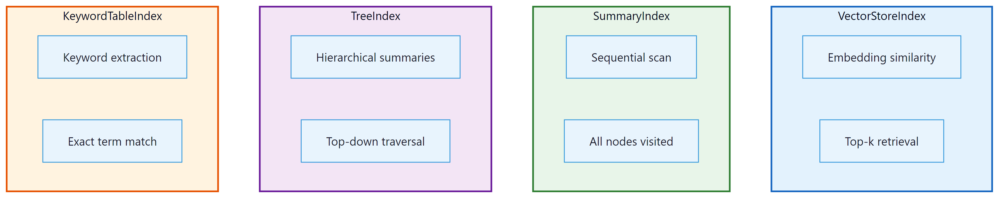

Once your data is loaded into Document and TextNode objects, you need
a structure that enables efficient retrieval. LlamaIndex: Data Indexing and Query Engines offers four core index types,
each optimized for a different query pattern. This section covers VectorStoreIndex (semantic search),
SummaryIndex (sequential scanning), TreeIndex (hierarchical summarization), and KeywordTableIndex
(keyword lookup). You will also learn how to persist indexes, swap embedding models, and choose
the right index for your use case.
O.2.1 Why Indexes Matter
An index is the bridge between raw text and an LLM-powered query engine. Without an index, every query would require scanning all of your documents from start to finish, which is both slow and expensive in LLM tokens. Indexes organize your nodes so that only the most relevant chunks are retrieved and sent to the LLM. The choice of index type determines how relevance is computed: by embedding similarity, by keyword overlap, by hierarchical summarization, or by simple sequential order.

O.2.2 VectorStoreIndex
The VectorStoreIndex is the most widely used index type and the default for most
RAG applications. It embeds each node's text into a dense vector and stores those vectors in
a vector store. At query time, the query is embedded with the same model, and the top-k most
similar nodes are retrieved via approximate nearest neighbor search.
from llama_index.core import VectorStoreIndex, SimpleDirectoryReader
# Load documents
documents = SimpleDirectoryReader("./data/research_papers").load_data()
# Build a vector index (embeds all nodes automatically)
index = VectorStoreIndex.from_documents(
documents,
show_progress=True,
)
# Query the index
query_engine = index.as_query_engine(similarity_top_k=5)
response = query_engine.query("What are the key findings on transformer efficiency?")
print(response)
By default, LlamaIndex: Data Indexing and Query Engines uses OpenAI's text-embedding-ada-002 model for embeddings.
The similarity_top_k parameter controls how many chunks are retrieved. A value
between 3 and 10 works well for most use cases; larger values provide more context at the cost
of increased latency and token usage.
Using a Custom Embedding Model
You can swap the embedding model by configuring the Settings object. This is useful
when you want to use a local model (for privacy or cost reasons) or a domain-specific model
that better captures your data's semantics.
from llama_index.core import VectorStoreIndex, SimpleDirectoryReader, Settings
from llama_index.embeddings.huggingface import HuggingFaceEmbedding
# Use a local embedding model
Settings.embed_model = HuggingFaceEmbedding(
model_name="BAAI/bge-small-en-v1.5"
)
documents = SimpleDirectoryReader("./data").load_data()
index = VectorStoreIndex.from_documents(documents)
# Queries now use the local embedding model automatically
query_engine = index.as_query_engine()
response = query_engine.query("Explain the attention mechanism.")
print(response)When switching embedding models, you must re-index your data. Embeddings from different models live in incompatible vector spaces, so mixing them in a single index will produce poor results.
O.2.3 SummaryIndex
The SummaryIndex (formerly called ListIndex) takes a different approach.
Instead of selecting a subset of nodes, it passes all nodes to the LLM in sequence.
The response synthesizer iterates over every chunk, refining its answer as it goes. This is
ideal for tasks where you need comprehensive coverage, such as summarization, or when your
corpus is small enough that scanning everything is feasible.
from llama_index.core import SummaryIndex, SimpleDirectoryReader
documents = SimpleDirectoryReader("./data/quarterly_report").load_data()
# Build a summary index (no embedding needed)
index = SummaryIndex.from_documents(documents)
# Query: the LLM reads all chunks sequentially
query_engine = index.as_query_engine(
response_mode="tree_summarize"
)
response = query_engine.query("Summarize the key financial metrics for Q3.")
print(response)Because SummaryIndex sends all nodes to the LLM, it can be expensive on large
corpora. Use it only when you genuinely need full coverage. For selective retrieval on large
datasets, VectorStoreIndex is almost always the better choice.
O.2.4 TreeIndex
The TreeIndex builds a hierarchical tree of summaries over your nodes. Leaf nodes
contain the original text chunks, and each parent node contains an LLM-generated summary of its
children. At query time, the engine traverses the tree from root to leaf, selecting the most
relevant branch at each level. This makes it effective for large corpora where you want both
high-level overviews and detailed drill-downs.
from llama_index.core import TreeIndex, SimpleDirectoryReader
documents = SimpleDirectoryReader("./data/technical_docs").load_data()
# Build a tree index (generates summaries at each level)
index = TreeIndex.from_documents(
documents,
num_children=4, # branching factor
show_progress=True,
)
# Query with tree traversal
query_engine = index.as_query_engine(
child_branch_factor=2 # consider top 2 branches at each level
)
response = query_engine.query("What authentication methods are supported?")
print(response)
The num_children parameter controls the branching factor during index construction.
A lower value creates a deeper tree with more summarization layers; a higher value creates a
shallower, wider tree. The child_branch_factor at query time controls how many
branches are explored, trading off between recall and efficiency.
O.2.5 KeywordTableIndex
The KeywordTableIndex extracts keywords from each node (using either an LLM or a
simple algorithm) and builds a keyword-to-node mapping. At query time, keywords are extracted
from the query and matched against this table. This is useful when your queries contain specific
technical terms, product names, or identifiers that are better matched literally than semantically.
from llama_index.core import KeywordTableIndex, SimpleDirectoryReader
documents = SimpleDirectoryReader("./data/api_docs").load_data()
# Build a keyword table index
index = KeywordTableIndex.from_documents(documents)
# Query by keyword matching
query_engine = index.as_query_engine()
response = query_engine.query("How do I configure the OAuth2 client credentials flow?")
print(response)For best results, combine keyword and vector indexes using a RouterQueryEngine
or ComposableGraph. This gives you both semantic understanding and exact-match
precision. We cover these composition patterns in Section O.4.
O.2.6 Persisting and Loading Indexes
Building an index can be time-consuming (and costly, if it involves LLM calls for summarization
or keyword extraction). LlamaIndex: Data Indexing and Query Engines provides a StorageContext that lets you persist
an index to disk and reload it later without reprocessing your documents.
from llama_index.core import (
VectorStoreIndex,
SimpleDirectoryReader,
StorageContext,
load_index_from_storage,
)
import os
PERSIST_DIR = "./storage/my_index"
if os.path.exists(PERSIST_DIR):
# Reload from disk
storage_context = StorageContext.from_defaults(persist_dir=PERSIST_DIR)
index = load_index_from_storage(storage_context)
print("Index loaded from disk.")
else:
# Build and persist
documents = SimpleDirectoryReader("./data").load_data()
index = VectorStoreIndex.from_documents(documents)
index.storage_context.persist(persist_dir=PERSIST_DIR)
print("Index built and persisted.")
# Use the index normally
query_engine = index.as_query_engine()
response = query_engine.query("What is the refund policy?")
print(response)
The persisted storage directory contains several JSON files: the document store, the index
structure, and (for vector indexes) the embeddings. For production deployments with large
datasets, you should use an external vector store (such as Pinecone, Weaviate, Qdrant, or
ChromaDB) instead of the default in-memory store. LlamaIndex: Data Indexing and Query Engines integrates with all major
vector databases through its VectorStore abstraction.
When choosing an index type, start with VectorStoreIndex for general-purpose
semantic search. If you need full-corpus summarization, use SummaryIndex. If your
queries are hierarchical in nature (broad questions that need drill-down), consider
TreeIndex. Reserve KeywordTableIndex for domains with heavy jargon
or identifiers where exact matching outperforms semantic similarity.
Compare index types on the same corpus. Load a set of 20+ documents and build all four index types. Run the same five queries against each index and compare the responses for relevance, completeness, and latency. Which index type performs best for factual lookup questions? Which performs best for summarization requests?